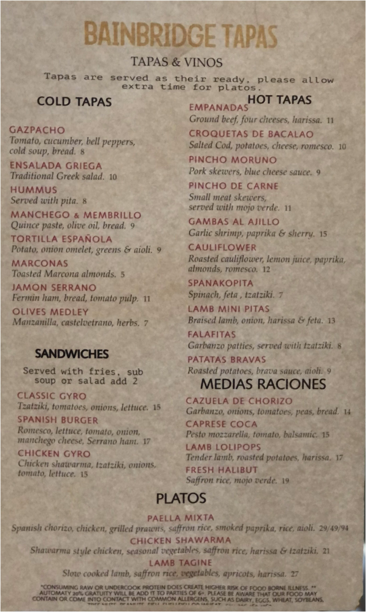
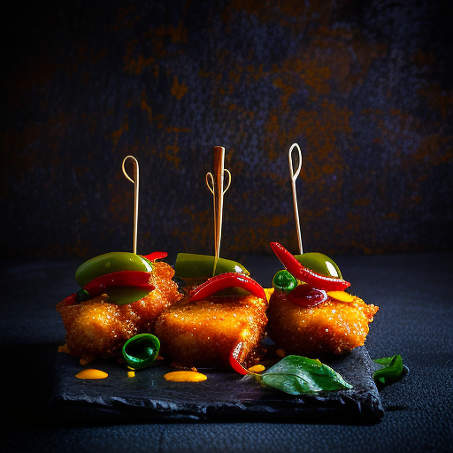
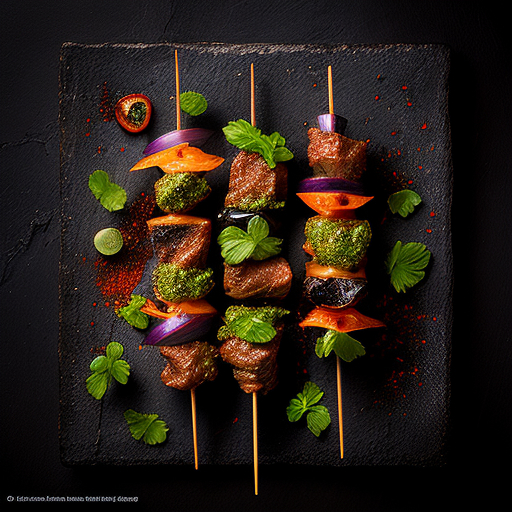
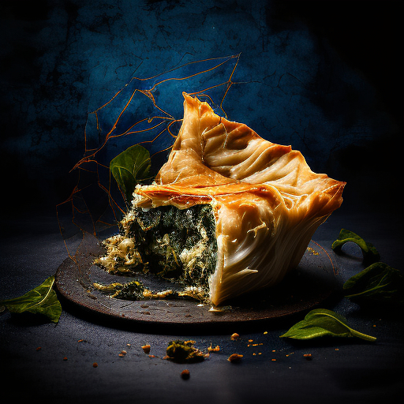

Menu Items
Please understand--We serve small "tapas" portions.
These images are intended to help
you translate our menu.
Pincho Murano (Pork skewers, spices, brava sauce)
GAMBAS AL AJILLO Garlic shrimp, paprika & spanish brat
Empenada
A mouth-watering photo of Empanada, a mouth watering combination of ground beef, four cheeses, and harissa.
Croquetas De Bacalao
A Croquetas De Bacalao , a mouth watering combination of Salted cod, potatoes, cheese, mojo verde.


Pixto de Pollo - Small breaded chicken bites with harissa
PINCHO DE CARNE Small meat skewers, served with mojo
SPANAKOPITA , a mouth watering Greek savory spinach pie with feta cheese.
Croquetas De Bacalao
A Croquetas De Bacalao , a mouth watering combination of Salted cod, potatoes, cheese, mojo verde.